Workprint manual
A shared schedule for teams: who is doing what, by when, and who is waiting on whom.
Open Workprint at getworkprint.app. This manual covers every screen, in plain words, with pictures from the app.
What Workprint is
Every project in Workprint lives on one main screen. The numbers in the picture match this list.
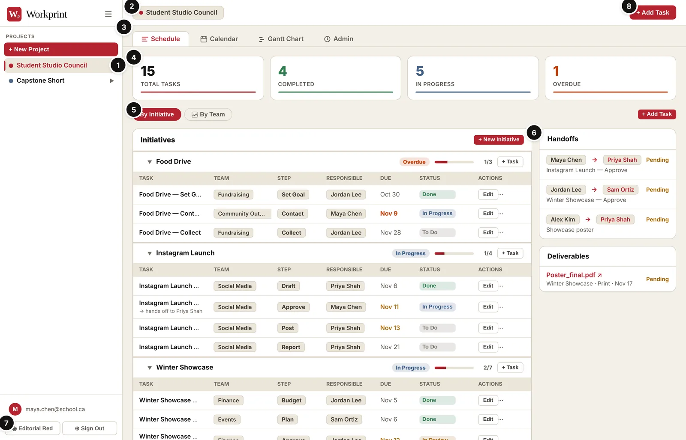
- Projects list. Every project you own or have joined. Click one to open it.
- Current project. The name of the project you are looking at.
- Tabs. Schedule (the list of work), Calendar, Gantt Chart, Funding (Studio Management projects only), and Admin (owners only).
- Counters. How many tasks there are, and how many are done, in progress and overdue. Click one to show only those tasks.
- View switch. See the work grouped By Initiative or By Team.
- Handoffs and Deliverables. Who is waiting on whom, and the files or links the work produces.
- Colour scheme and Sign Out. Pick the look you like. Each person picks their own.
- + Add Task. Add a new piece of work.
Workprint has two kinds of project:
| Template | Good for | You organize |
|---|---|---|
| Studio Management | Councils, clubs, studios, committees | Initiatives (events, campaigns, fundraisers) worked on by teams |
| Production | Animation, film, VFX | Assets moving through a pipeline, plus sequences and shots |
Getting started
You need an account to use Workprint. Your email is your login.
- Create an account. On the sign-in screen click Create Account. Enter your email and a password (6 characters or more). Open the email you get and click the link to confirm.
- Sign in. Email and password on the Sign In tab.
- Forgot your password? Type your email in the sign-in form, then click Forgot password? Open the link in the email, choose a new password, and you are signed in.
- Got an invite? Open the invite link first, then sign in or create your account. Lost the link? Click Have an invite code? Click here and type the code.
- Sign out. The Sign Out button at the bottom of the sidebar.
- On a phone or tablet. Tap the ☰ button to open the sidebar. Wide tables scroll sideways.
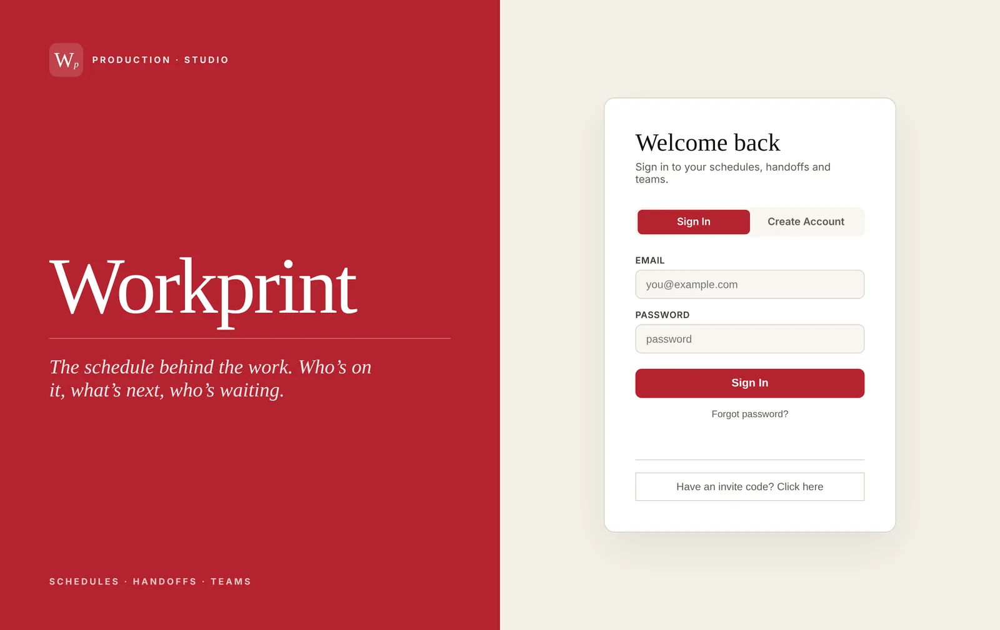
Pick your colour scheme
Click the Theme button at the bottom of the sidebar and pick one of five:
| Scheme | Look |
|---|---|
| Editorial Red (default) | Warm paper with a red accent |
| Ink & Brass | Dark, with a gold accent |
| Studio Violet | Light, with a violet accent |
| Blueprint Blue | Light, with a navy accent |
| Classic Dark | The original dark look |
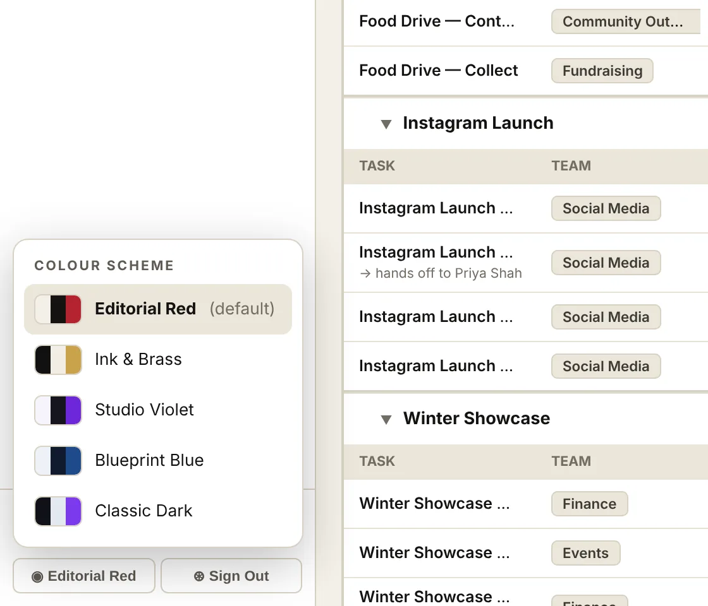
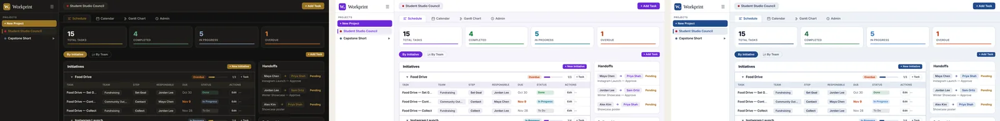
Your choice follows your account, so it is the same on every computer you sign in on. It only changes what you see, not what your team sees.
Install it on an iPad or Android
Workprint can sit on your Home Screen like an app, with its own red W icon. It opens full-screen.
- iPad or iPhone: open getworkprint.app in Safari, tap the Share button (the square with an arrow), then Add to Home Screen. Leave Open as Web App on if you see it, then tap Add.
- Android: open getworkprint.app in Chrome, tap ⋮, then Install app (or Add to Home screen).
Sign in once inside the app. Links in emails (invites, password resets, confirmations) still open in the browser; finish there, then go back to the app.
On a touch screen, press and hold a Gantt bar or calendar task for a moment, then drag it. A normal swipe still scrolls, and a tap still opens the task.
Projects
A project is one shared schedule, for example a council's year or a short film. You pick its template once, when you make it.
Make a project
- Click + New Project at the top of the sidebar.
- Pick Studio Management or Production.
- Studio Management only: leave Add starter tasks to get going ticked if you want three sample initiatives (Getting Started, First General Meeting, Term Fundraiser). You can change or delete them later.
- Type a name, a short description if you like, and pick a colour.
- Click Save Project. It opens right away.
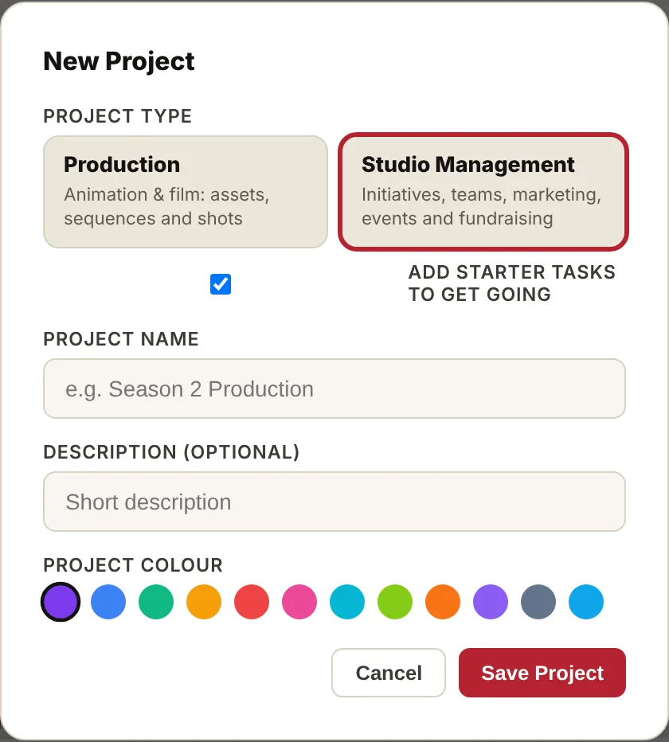
Day to day
- Switch projects. Click a project in the sidebar. Workprint reopens the last one you used on that device.
- Rename or recolour. Admin → Projects → Edit. The template can't be changed later.
- Production projects have a ▶ arrow in the sidebar that opens their sequences and shots.
The Schedule tab
The Schedule tab is home base: the counters at the top, the work in the middle, Handoffs and Deliverables on the right.
Counters
| Counter | Counts |
|---|---|
| Total Tasks | Every task in the project |
| Completed | Tasks marked Done |
| In Progress | Tasks someone is working on |
| Overdue | Tasks past their due date that aren't Done |
| Revisions (Production only) | Times work was sent back for changes |
Click a counter to show only those tasks. Click it again, or Clear, to show everything. The progress bar under the list shows how much of the project is done. At 100% you get a small celebration.
Groups
Tasks sit in groups you can fold with the ▼ arrow. Each group header shows a badge (Done, Overdue, In Progress or Not Started), a progress bar, a done/total count and a + Task button that fills in the group for you.
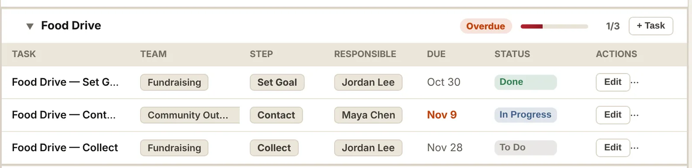
Status
Change a task's status from the dropdown in its row. Every task moves the same way:
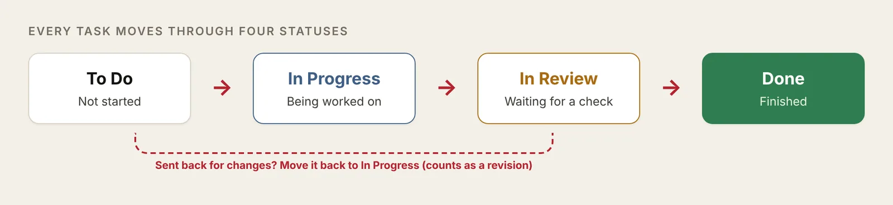
Handoffs
A handoff says “when I finish, this person is next.” It shows in the Handoffs panel as Pending until the task is Done, so the next person can see what's coming. In the list, the task also shows “→ hands off to …” under its name.
Deliverables
A deliverable is the thing a task produces: a poster PDF, a post link, a model file. Add its name and a link under Show Advanced Options. It shows in the Deliverables panel (called Final Assets in Production projects). Links must start with http:// or https://.
The Add Task window
Open it with + Add Task, a group's + Task button, or Edit on any row. The words change a little with the template; Studio Management words come first below.
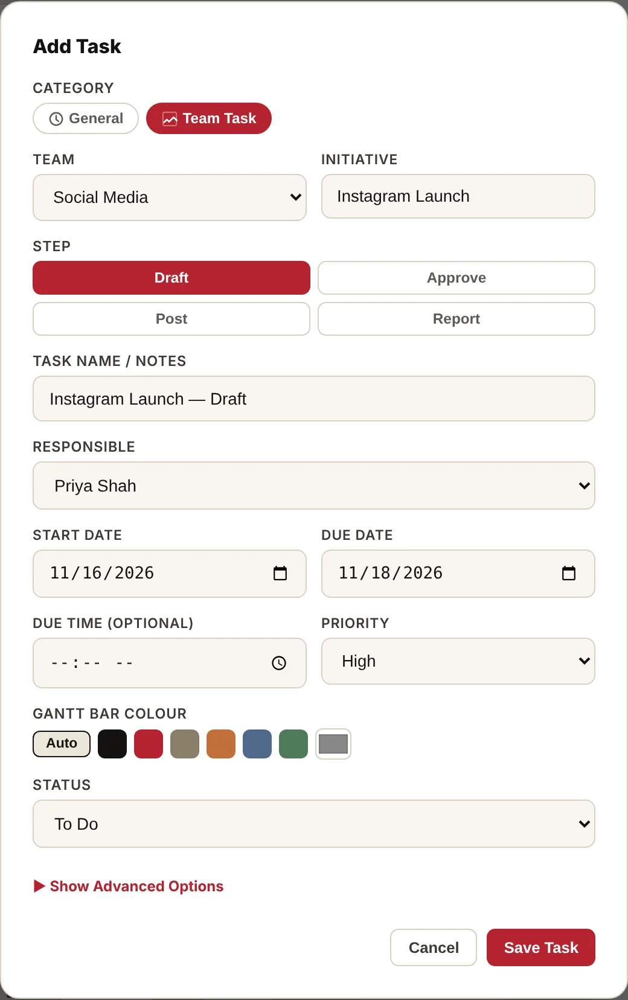
| Field | What to put there |
|---|---|
| Category | Team Task (Production: Asset Task) for work in a team's process. General (Production: Milestone / Admin) for one-off things like a meeting agenda |
| Team (Production: Asset Type) | Which team does the work: Finance, Social Media, Print and so on |
| Initiative (Production: Asset Name) | The bigger thing this task is part of, e.g. Winter Showcase. Tasks with the exact same initiative name group together. Start typing to pick an existing one |
| Step (Production: Pipeline Stage) | Where the task sits in that team's process. Picking a step fills in the task name for you |
| Task Name / Notes | A short name for the task. Change the filled-in name if you like |
| Responsible (Production: Lead / Artist) | Who does it. Names come from Team Members |
| Start Date, Due Date | When work starts and when it must be done. These place the task on the Calendar and Gantt chart and drive the Overdue counter |
| Due Time | Optional time of day, e.g. 3:00 PM for a meeting |
| Priority | High, Medium or Low |
| Gantt Bar Colour | Auto uses the team's colour. Pick a swatch to give just this task its own colour |
| Status | To Do, In Progress, In Review or Done |
| Handoff To (Advanced) | Who gets the work next. Shows in the Handoffs panel |
| Deliverable Name and URL (Advanced) | The file or link this task produces. Shows in the Deliverables panel |
Click Save Task when you're done, or Cancel to close without saving. Pressing Esc or clicking outside the window also closes it without saving.
Studio Management: teams, initiatives and steps
Three words do most of the work in a Studio Management project:
- Initiative: something you're making happen, with an end. Winter Showcase, Food Drive, Instagram Launch.
- Team: a group with a job. Finance, Social Media, Print and so on.
- Step: where a task is in that team's usual process. Each team has its own steps, in order.
One initiative usually needs several teams. The Winter Showcase needs Finance to set a budget, Events to book the room, Print to make the poster and Social Media to announce it. Each of those is a task, and they all group under the same initiative.
Two ways to look at the work
- By Initiative shows one card per initiative, with every team's tasks inside. Use it to see whether an event is on track. Cards with the nearest due date come first.
- By Team shows one card per team, with that team's tasks from every initiative. Use it to see one team's workload.
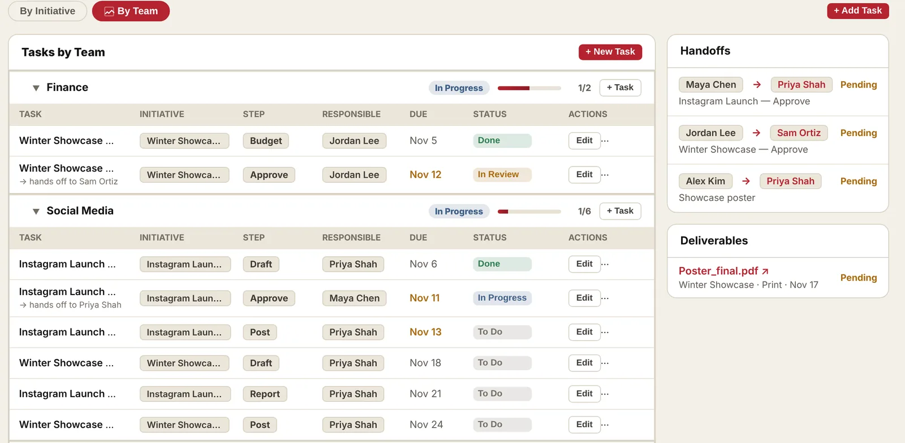
What each step means
The steps run left to right. A step is just a label that tells everyone where the work is; you don't have to use every step.
| Team | Steps, in order | What happens at each step |
|---|---|---|
| Social Media | Draft → Approve → Post → Report | Draft: write the caption and make the image. Approve: someone else checks spelling, facts, dates and tone. Post: publish it on the planned day. Report: a week later, note how it did (likes, shares, comments) |
| Marketing | Plan → Create → Review → Launch | Plan: decide the message, audience and channels. Create: make the posters, emails and videos. Review: check them. Launch: send them out |
| Design → Proof → Print → Distribute | Design: lay out the poster or flyer. Proof: check a test copy for mistakes. Print: print the real copies. Distribute: put them up or hand them out | |
| Finance | Budget → Approve → Spend → Reconcile | Budget: work out what it will cost. Approve: get the budget signed off. Spend: buy what's needed. Reconcile: match receipts to the budget and close it off |
| Events | Plan → Book → Promote → Run → Wrap-up | Plan: date, place, run sheet. Book: room, gear, food, guests. Promote: tell people. Run: the day itself. Wrap-up: clean up, thank-yous, what to do better |
| Contests | Announce → Collect Entries → Judge → Award | Announce: rules and deadline. Collect Entries: gather submissions. Judge: pick winners. Award: announce and hand out prizes |
| Fundraising | Set Goal → Plan → Collect → Thank Donors | Set Goal: how much and what for. Plan: how you'll raise it. Collect: run the drive. Thank Donors: say thank you and share the result |
| Community Outreach | Contact → Plan → Run → Follow-up | Contact: reach the partner or group. Plan: agree what you'll do together. Run: do it. Follow-up: thank them and keep in touch |
| Grants | Research → Draft → Budget → Review → Submit → Report | Used by the Funding tab. See Funding |
| Other | Plan → Do → Review | For anything that doesn't fit a team above |
Here is the Social Media process as a picture:
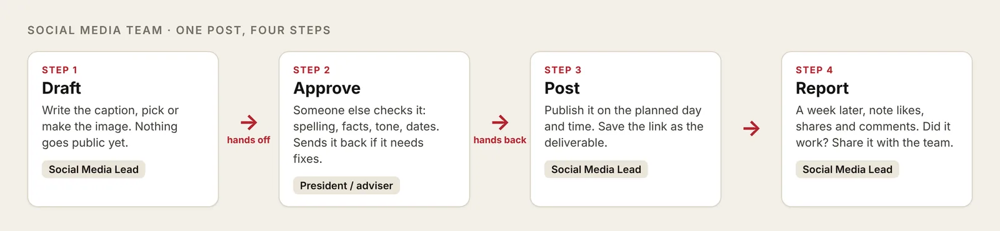
Walkthrough: set up an initiative
This example sets up the Winter Showcase, an evening event four weeks away. Here is the plan we're building, one row per team:
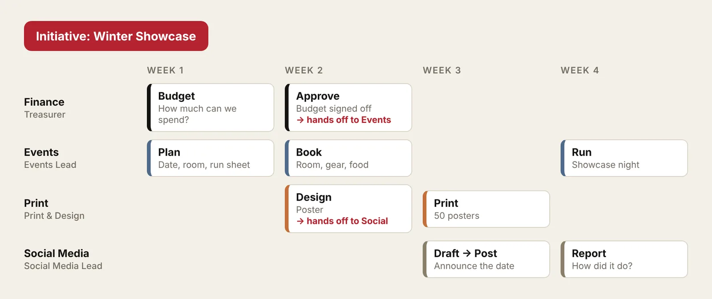
Before you start
- Open the project and make sure the people are in Admin → Team Members. Anyone who joined with an invite is already there. Add anyone else with + Add.
- Work out the event date. Every other date counts back from it.
Add the first task
- On the Schedule tab, pick By Initiative, then click + New Initiative.
- Category is already set to Team Task.
- Team: pick Finance.
- Initiative: type Winter Showcase. Spell it the same way every time; that's how tasks group together.
- Step: click Budget. The task name fills in as Winter Showcase — Budget.
- Responsible: pick the Treasurer.
- Start Date and Due Date: the first week.
- Click Save Task. A new Winter Showcase card appears.
Add the rest
- On the Winter Showcase card, click + Task. The initiative is filled in for you.
- Pick the team and step, the person and the dates, then Save Task.
- Repeat for each piece of work: Finance Approve, Events Plan, Book and Run, Print Design and Print, Social Media Draft, Post and Report.
You don't need every step for every team. Add the steps that actually happen.
Connect the handoffs
Where one person's work is the next person's starting point, add a handoff:
- Click Edit on the task, e.g. Print — Design.
- Click Show Advanced Options.
- Handoff To: pick the Social Media Lead, who needs the poster to announce the event.
- Save. The handoff now shows in the Handoffs panel as Pending.
Run it week by week
- Each person moves their own task along: To Do → In Progress → In Review → Done.
- When a task with a handoff is marked Done, the next person knows they can start.
- Glance at the card's badge and progress bar. A red Overdue badge means something is late.
- Open the Gantt Chart to see the whole timeline and drag dates if plans change.
- Add the poster PDF or post link as a Deliverable so everyone can find the final files.
Tips
- One initiative per real-world thing. Winter Showcase and Winter Showcase 2026 would make two cards.
- Use General tasks for one-off jobs that aren't part of a team process, like Council meeting agenda.
- Keep step names as they are; they tell everyone where the work is at a glance.
Funding (Studio Management projects)
The Funding tab keeps track of grants, awards, sponsorships and other money your group could apply for, and puts the deadlines on your schedule. It only appears in Studio Management projects.
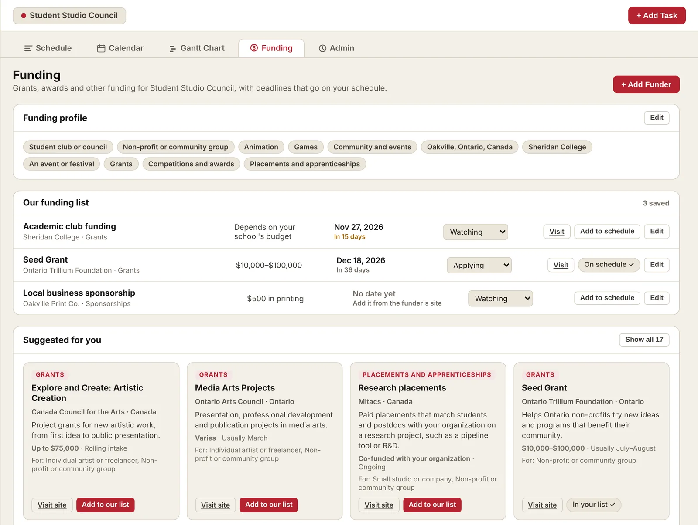
1. Set up the funding profile (owners)
Click Set up (or Edit) on the Funding profile card and pick everything that applies:
- Who we are: student club or council, non-profit or community group, small studio or company, or individual artist.
- Industry: animation, film and TV, games, interactive / XR, music, visual arts, design, community and events.
- Where: country, province, city, and your school if you have one.
- What the money is for and kinds of funding (grants, bursaries, competitions, sponsorships, tax credits, placements).
Workprint uses the profile to choose which funders to suggest. A student council and a studio see different lists. The project creator and any co-owner can change the profile.
2. Pick funders
- Suggested for you shows starter funders that fit your profile: national and Ontario arts and media funders, local city grants, school funding, competitions and research placements. Click Show all to see the full list.
- Click ☆ to save a funder to Our funding list, then type in the real deadline from the funder's website.
- Click + Add Funder for anything not in the list, like a local business sponsor.
Programs, amounts and dates change every year. Always check the funder's own site before applying.
The weekly scout
Every Monday morning, Workprint searches the web for open funding that fits your profile and lists what it finds under New from the weekly scout. Each card shows the funder, amount, deadline (if the page gave one), who can apply and why it fits. The scout skips anything already in your starter list or your funding list, so it only shows new leads.
- Click ☆ to save it to Our funding list. Saved funders stay put when suggestions refresh.
- Click Dismiss to hide it. It won't come back.
- Owners can click Run now for an extra search, once a day per project. It takes a minute or two.
3. Track it
Each funder in Our funding list shows the amount, the deadline with days left, and a status: Watching, Applying, Submitted, Awarded or Not this time. Deadlines also show on the Calendar as dashed gold chips.
4. Add it to the schedule
Click Add to schedule on a funder with a deadline. Workprint creates a Grant: initiative on the Grants team with five steps, counted back from the deadline:
| Step | What happens |
|---|---|
| Research | Read the rules, check you're eligible, collect examples |
| Draft | Write the application |
| Budget | Build the budget the funder asks for |
| Review | Someone else checks it, the same as Approve for a post |
| Submit | Send it before the deadline (high priority) |
Then assign who's responsible for each step. If you win, add a Report task for the funder's final report once you know its date.
Production projects
Production projects track two kinds of work: assets (characters, props, sets) moving through a pipeline, and shots moving through departments.
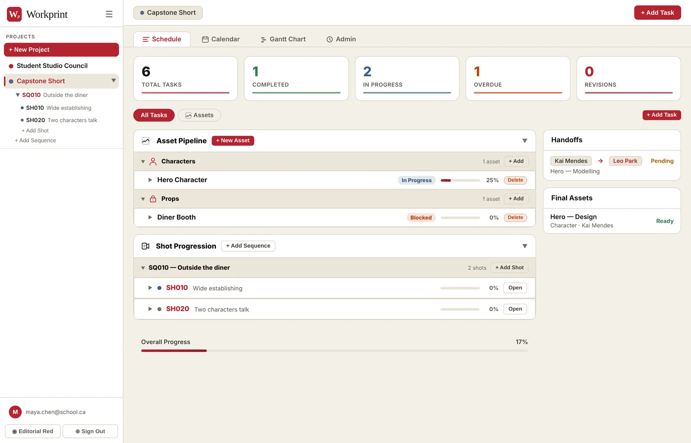
Asset pipeline
Each asset, e.g. Hero Character, gets one task per stage. Its card shows a progress bar and a badge: Ready, In Progress, or Blocked (something is overdue).
| Asset type | Stages, in order |
|---|---|
| Character | Design → Modelling → Surfacing → Rigging |
| Prop | Design → Modelling → Surfacing |
| Environment | Design → Modelling → Surfacing → Dressing |
| Vehicle | Design → Modelling → Surfacing → Rigging |
| FX Element | Design → Development → Sign-off |
The Assets button above the list shows only the pipeline; All Tasks shows assets and shots together.
Sequences and shots
- In the sidebar, click the ▶ arrow beside the project, then + Add Sequence. Number in tens: SQ010, SQ020.
- Under a sequence, click + Add Shot (SH010, SH020). Give it start and due dates so it shows on the Gantt chart.
- Click a shot to open its shot page.
The shot page
- Status: Pending, In Progress, In Review, Approved, Final.
- Storyboard Notes and Shot Details (frame count, camera, framing, angle) save when you click away.
- Shot Tasks: add Layout, Animation, CFX, FX, Lighting, Rendering, Compositing or your own. Each shot task has its own status: Ready to Start, In Progress, Supervisor Review, Approved, Final. Sending a task back from review raises its version (v1 → v2).
- Asset Readiness: click + Link Asset to list the assets in the shot. A warning shows if any of them is still in progress or overdue.
Calendar and Gantt chart
Both show the same tasks as the Schedule. Change a date in one and it changes everywhere.
Calendar
- One month at a time. Use ←, → and Today to move.
- Each task sits on its due date, coloured by status. Today has a red outline.
- Drag a task to another day to change its due date. Click it to edit it.
- In Production projects, shot tasks show too; clicking one opens its shot.
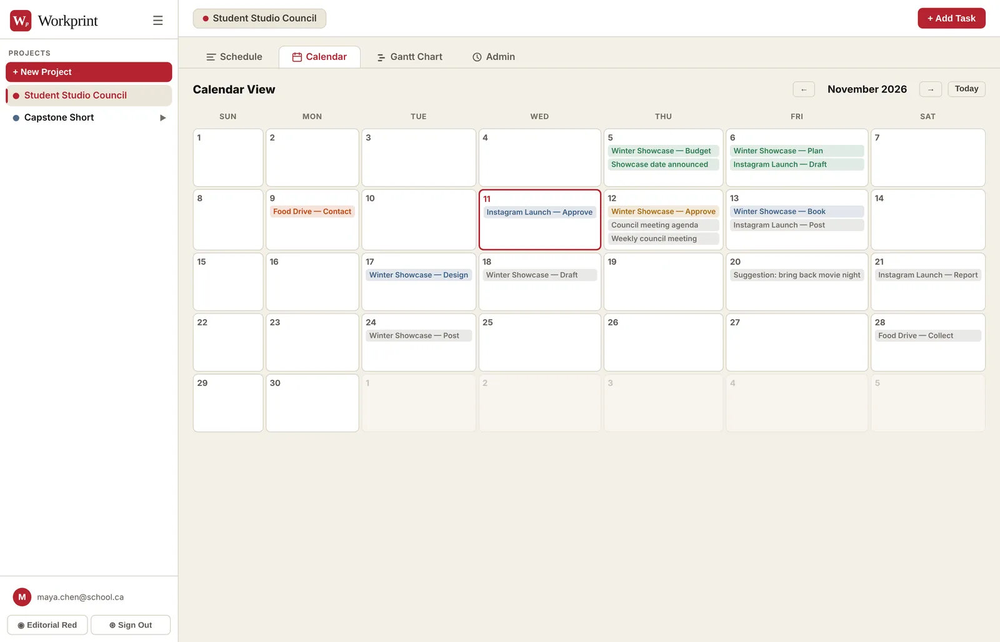
Gantt chart
The Gantt chart is a timeline: one row per task, one bar from its start date to its due date.
- It shows about two months, starting a week before today. ← and → move two weeks; Today jumps back.
- Drag a bar to move the task. Drag either end to change the start or due date. Click a bar to edit it.
- Tasks without a due date don't appear.
- Today's column is shaded. A bar with a coloured outline is overdue; a faded bar is done.
- Click a section header to fold it. Production projects also show shots, grouped by sequence.
- On a touch screen, press and hold a bar for a moment before dragging it. The same works for tasks on the Calendar.
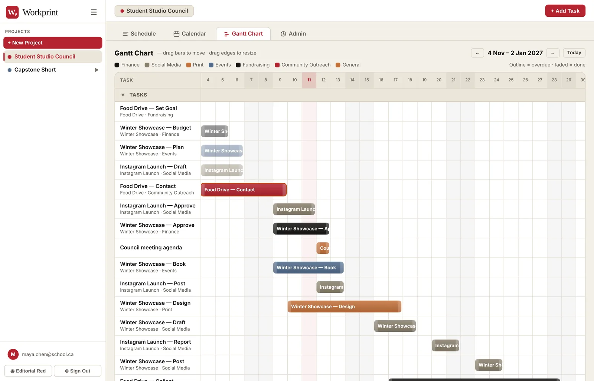
Bar colours
Bars are coloured by team (or asset type), and the key above the chart shows which colour is which.
- Owners set the team colours in Admin → Projects → Edit, under Gantt colours. Click a swatch to change it, or Reset to theme to go back. Everyone on the project sees these colours.
- Any task can have its own colour. In the Add Task window, pick a swatch under Gantt Bar Colour. Auto goes back to the team colour.
- Until an owner picks colours, the bars use the colours of each person's own scheme.
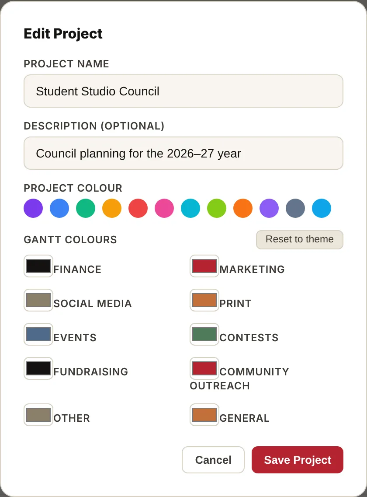
People: invites, roles and Team Members
A project has two lists of people:
- Current Members (in the Invite window): people with an account who can open the project.
- Team Members (in Admin; called Production Team in Production projects): the crew list. These names fill the Responsible dropdown, the handoffs and the email buttons.
When someone joins with an invite, Workprint adds them to both lists for you.
Invite people
- Go to Admin → Projects and click Invite on the project.
- Optional: pick a role under Pre-select Role. Everyone who joins with this link gets that role and isn't asked.
- Click Copy and paste the link into an email, a Teams post or your course page. One link works for everyone and lasts 90 days.
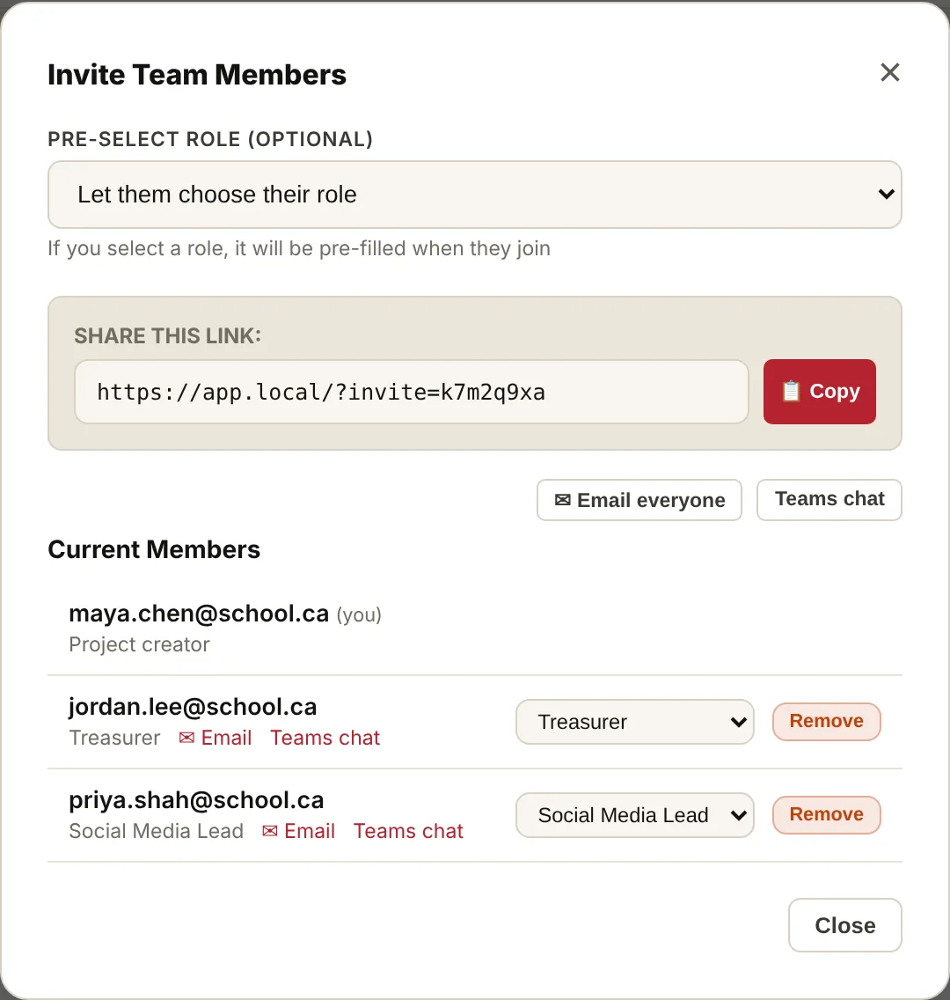
Your link starts with https://getworkprint.app/?invite= followed by the code. Each owner gets their own code for each project, so two co-owners may share different links. All of them work. Anyone who has the link or code can join, so share it only where you mean to.
Join a project
- Open the invite link.
- Sign in, or create an account.
- Type your name as the team should see it.
- If asked, type your role. Not sure? Leave it blank and you join as Member; the owner can change it later.
- The project opens and appears in your sidebar.
Lost the link? On the sign-in screen click Have an invite code? Click here and type the code. You can join as many projects as you have codes for, from any owner, with the same account.
Roles
| Role | Can do |
|---|---|
| Project creator | Everything, including deleting the project. Can't be changed |
| Owner (co-owner) | The Admin tab, Team Members, invites, roles, Gantt colours, the funding profile, removing people |
| Any other role (Member, Treasurer…) | Work on the Schedule, Calendar, Gantt chart and Funding list |
Owners change a role with the dropdown beside each person in the Invite window. Choose Owner (co-owner) to share the running of the project; Workprint asks you to confirm. Changing a role also updates that person in Team Members. Nobody can make themselves an owner with an invite.
Remove takes someone off the project. They stay in Team Members in case they're still on the crew; delete them there if they've left.
Team Members
In Admin → Team Members, click + Add to add someone by hand, for example a volunteer without an account. Use Link to someone who has joined to fill in a member's name and email, or type a name and an email yourself. Click Edit on anyone to fix their name, role or email.
Email and Teams
- Email all (Admin) and Email everyone (Invite window) open your own email app with the whole team in BCC.
- Teams chat opens a Microsoft Teams group chat with the team.
- Each person has their own Email and Teams chat links.
- These only include people with an email on file: joined members, and Team Members you gave an email.
The Admin tab
Only the project creator and co-owners see the Admin tab. Every section folds with its ▼ arrow.
| Section | Studio Management name | Production name | Use it for |
|---|---|---|---|
| Projects | Projects | Projects | Every project you're in, with Edit, Export, Invite and Delete. Click a project's row to switch to it; the sections below change to that project, and its name shows in each header |
| Notes from outside | Feedback & Suggestions | Client Feedback | Ideas and requests to act on, with who, when and priority |
| Getting the word out | Announcements | Marketing | Announcements and promotion |
| Meetings | Meetings | Meetings | Upcoming meetings and notes |
| People | Team Members | Production Team | The crew list (see People) |
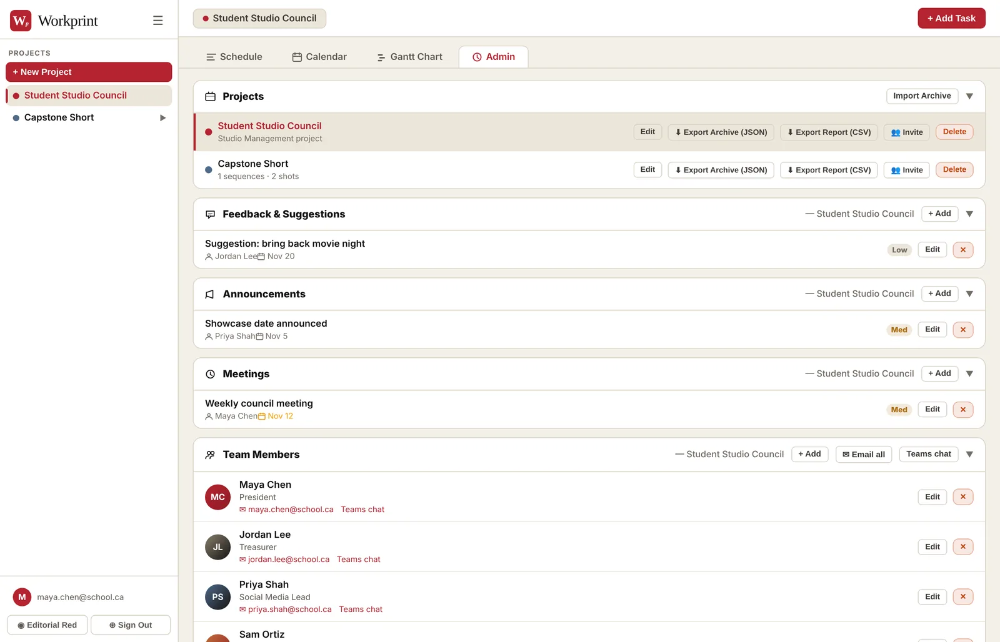
Backups
- Export Archive (JSON): a complete copy of the project. Make one before big changes and at the end of each term.
- Export Report (CSV): the project's tasks, shots and people as rows, for Excel or Google Sheets.
- Import Archive: rebuilds a project from a JSON archive as a new project marked “(Imported)”. The original is untouched.
Deleting a project
Delete removes the project and everything in it for good. Only the project creator can do it, and Workprint asks first. Export an archive before you delete.
Shortcuts, troubleshooting and good habits
| Shortcut | Does |
|---|---|
| Ctrl+K (Cmd+K on Mac) | Search tasks and shots in the current project |
| Esc | Close any open window or the search |
| Click outside a window | Close it without saving |
If something goes wrong
| Problem | Fix |
|---|---|
| The confirmation or reset email didn't arrive | Check spam or junk (school mail may hold it in quarantine), wait a minute, then try again. Emails come from noreply@getworkprint.app |
| I joined but don't see the project | Click Have an invite code? Click here and type the code from the link |
| “This invite code is invalid or has expired” | Ask the owner for the current link; codes last 90 days |
| My name isn't in the Responsible list | Ask an owner to add you in Admin → Team Members |
| I can't see the Admin tab | Only the creator and co-owners can. Ask an owner to change your role |
| Email all says there are no emails | Give your Team Members an email, or have people join with an invite |
| A save shows a red error | You may not be allowed to make that change. Ask an owner |
| Run now says the scout already ran | It runs once a day per project. Try again tomorrow, or wait for Monday's run |
| A task is missing from the Gantt chart | Give it a due date, then check the dates with ← and → |
Good habits
- Give every task a due date and a Responsible person.
- Type initiative names exactly the same way each time, so tasks group together.
- Add a handoff wherever someone is waiting on someone else.
- Export an archive before big clean-ups and at the end of each term.
What Workprint stores and who can see it: About and privacy. Questions: hello@getworkprint.app.